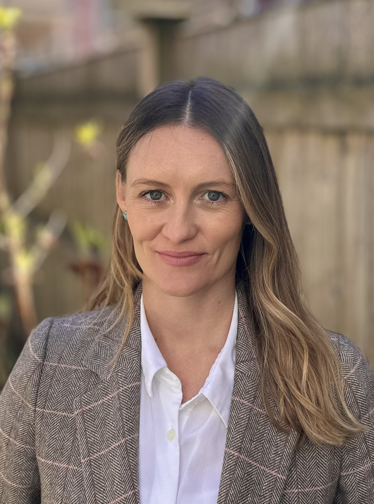

The Civic Power Lab is a mixed-methods research lab at the Harvard Kennedy School. We study democracy, civil society, and the organizational practices that make collective action powerful (or fragile).
Produce rigorous social-scientific research on democratic practice in partnership with the organizations, movements, and civic ecosystems that sustain it.
Build open-source infrastructure, training programs, and measurement tools that organizers can use.
Help train the next generation of researchers who move fluently between methods.

Liz McKenna is an Assistant Professor of Public Policy at the Harvard Kennedy School and Faculty Director of the Civic Power Lab. Her 2024–26 Carnegie Fellowship supports research on the reorganization of civic life across democratic-backsliding cases and the construction of the POLIS Database, the largest research dataset of organizing (as distinct from mobilizing) activity in the United States.
The dissertation on which her current book project, The Revolution Will Be Organized, is based received the 2021 American Sociological Association Best Dissertation Award. She has also published peer-reviewed articles in Perspectives on Politics, International Sociology, and American Behavioral Scientist, among other outlets.
Prior to HKS, Liz was a postdoctoral scholar at the P3 Lab and SNF Agora Institute at Johns Hopkins University and a predoctoral fellow at Stanford's Center on Philanthropy and Civil Society. Before academia, she worked as a political and community organizer in Ohio and Rio de Janeiro. She earned a B.A. in Social Studies from Harvard College in 2008 and a Ph.D. in Sociology from the University of California, Berkeley in 2020.
Sociologists, ethnographers, historians, learning scientists, political scientists, geospatial and network analysts, forward-deployed engineers, teachers, organizers, and a rotating bench of postdocs, RAs, and visiting scholars. Most of us have organizing experience outside the academy.
Developmental scientist. Ph.D. in Human Development (Tufts). Former Program Director of the Practicing Democracy Project.
Assistant Professor of Public Policy, University of North Carolina at Chapel Hill.
Former postdoc; PhD, Government, Harvard FAS (2025). Now at the United Auto Workers.
Director of the Organizing Lab. Two decades of organizing in Minnesota; lead architect of ISAIAH and Faith in Minnesota.
Founder, Coral. Engineer focused on learning science and technology. Harvard Lemann Fellow.
Harvard Kennedy School, MPP.
Research Program Director, DPI Fund. Co-author of the 2025 Civic Power and 2023 Power Metrics reports.
Data Strategist, State Power Fund. Ph.D. in Political Science, Stony Brook.
Partner at Sojourn Strategies. Ph.D. in Political Science, Emory University.
Senior Data Analyst, DPI.
Former Co-Executive Director, Ohio Organizing Collaborative.
Senior Data Analyst, DPI.
Ph.D., MIT Media Lab.
Professor of Urban Studies, Federal University of Pernambuco.
Principal at MW Strategies; Former Director of Research, Analyst Institute. Ph.D. in Government, Harvard FAS.
We hire RAs, postdocs, forward-deployed engineers, and visiting scholars most years.
Express interest →Research questions are often set with the practitioners doing the work, before fieldwork begins. The gap between what scholars want to know and what organizers need to know is itself the question.
Almost every project combines at least two of: administrative/observational data analysis, pre-posts, survey experiments, archival work, network analysis, interviews, and embedded ethnography.
We do not import constructs without testing whether the existing measure works for the population we study. Where established scales miss the phenomenon, we build and validate new ones.
We build datasets the field does not have, and we maintain them.
Original data stays with the organizations that produced it. Our data use agreements name the partner as the steward of record; we work on de-identified copies.
We design for partnerships of three years or more. One-off studies serve long-term questions or we don't run them.
The POLIS network: state-based organizing groups across the country who host the research and help interpret the data. Listed alphabetically.
The practice arm of the lab runs through a set of standing collaborations, with funders, intermediaries, and civic-tech peers , to build the field-owned infrastructure the moment demands.
Long standing partner. Supports (among other things) base-building groups as they collect and analyze organizing data so that they can evaluate their programs, with the goal of improving strategy, practice, and impact.
Field partner on POLIS / We Choose Us project. Provides funding, strategy support, and technical assistance to the state-based organizing groups in the network.
Runs leadership development and organizer trainings with more than 200 groups nationwide, collaborating with the Lab on measuring training effects. Anchor partner on the Groundwork platform vision.
Field-shared data infrastructure for organizing groups; collaborator on movement-side data standards.
Carnegie Foundation (Andrew Carnegie Fellowship, 2024–26) · Rockefeller Family Foundation (Democracy & Power Innovation Fund) · Rx Foundation · Harvard Lemann Brazil Research Fellowship · State Power Fund · Bloomberg Center for Cities Research Grant · Center for Public Leadership Faculty Research Grant.